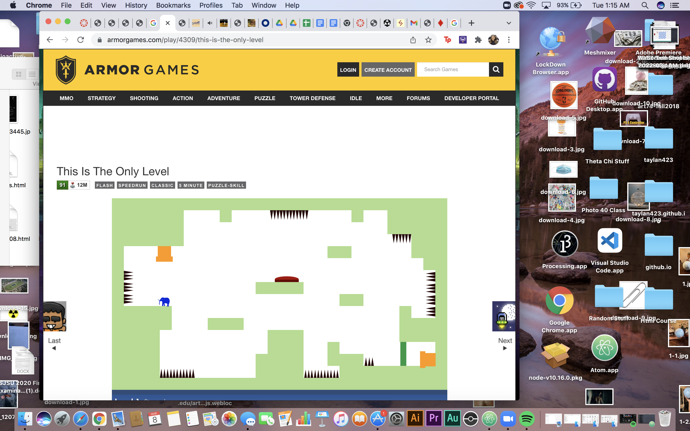

The game that I found very interesting was “This Is The Only Level” . I was very satisfied with how easy the first level was because it was just getting the elephant to hit the button and go to the ending of the game but then I got very confused with the other levels and I got very frustrated. The mechanics changed a lot throughout each level of the game. I almost wanted to quit at some point because it was getting too confusing for me and I just didn’t know what to do. In addition, to the timer was making it even worse because I was trying to rush through it pretty quickly.
A game that was pretty similar and almost had the same objective as “This is The Only Level” was a game that is called “Karnalita”. It was another puzzle game mechanic and you had to hit certain points or spots to reach the end of the game. In this game there wasn’t a change in the controls or movement of the player. The only thing that changed throughout each level was the puzzle and map that you had to go through. I felt like this game was more challenging than the other because you really had to estimate the length of the flower and the amount of water you had to absorb for the flower to grow. This was a real critical thinking game compared to the previous game. Another game that I played was “Horse Master” . This game’s mechanics were very different compared to the others because it was more of your decision and what you choose will affect your outcome of the game. Either your horse will get all of the nutrients it needs to become a strong and sturdy horse or it will fail. This game felt more interactive through clicking certain words and had a story to tell than almost a game. Basically you were making your own story throughout the game.
Something that I noticed while playing and watching someone else play is the fact that people have different strategies. When I was playing Karnalita, I felt like I was taking more of the cautious way of playing. Really trying to do math with the flower while the other player was trying to complete the level quicker and rushing the game. Meaning that he had to restart over and over because he kept either mistiming or growing too small or too big with the flower. Causing him to restart almost every single time.
Horse Master - https://tommchenry.itch.io/horse-master
Karnalita - https://havana24.itch.io/karnalita
This is the Only Level - http://armorgames.com/play/4309/this-is-the-only-level